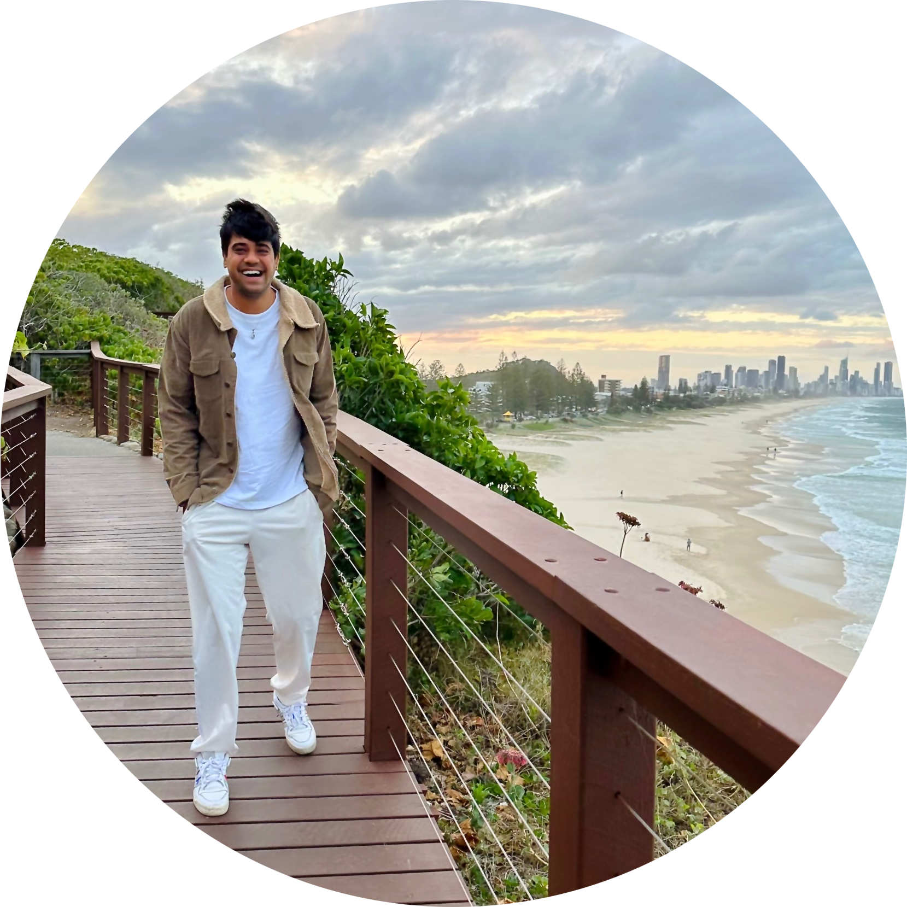

< BACK
 Thank you for visiting my profile! I appreciate you taking the time to explore my journey, skills, and experiences. Feel free to reach out if you have any questions or if there's anything specific you'd like to know. I hope you find my portfolio inspiring and informative! 😁
My Major: Software Development I pursued a Master's degree in Information Technology with a major in Software Development. Throughout my academic journey, I've honed my skills in programming, web development, database design, and more. My major has provided me with a solid foundation in software engineering principles and practices.
Career Goals My career aspiration is clear: to become one of the greatest software developers in the industry. I'm not just interested in writing code; I'm passionate about creating innovative solutions that solve real-world problems. Whether it's developing user-friendly applications or optimizing complex systems, I want to make a meaningful impact.
The Future As I embark on my career journey, I carry with me the technical prowess, cross-disciplinary adaptability, and ethical awareness gained during my placement. These experiences have prepared me for the challenges and opportunities that lie ahead.
I'm excited to continue learning, innovating, and contributing to the world of software development. My portfolio showcases my skills, experiences, and dedication to making a positive impact through technology. Thank you for joining me on this journey!
Throughout my academic and professional journey, I've had the privilege of engaging in various experiences that have shaped not only my skills but also my perspective on life and work. One such experience that stands out is my transition from a mass communication background to pursuing a career in software development.
Diverse Internships: During my undergraduate years, I delved into the field of public relations through multiple internships. These experiences honed my communication and interpersonal skills. I learned the art of effective storytelling and relationship building, which, surprisingly, has proven invaluable in the tech world.
The Shift to Software Development: My transition to software development was a significant turning point. It demanded self-driven learning and determination. I immersed myself in self-study, devouring coding tutorials and mastering various programming languages. This journey highlighted my passion for technology and my ability to adapt and learn swiftly.
Global Exploration: Beyond my academic and professional pursuits, I'm an avid traveler. Exploring different cultures and landscapes has not only broadened my horizons but also enhanced my adaptability and problem-solving skills. It has taught me the importance of embracing diversity and appreciating the beauty of unique perspectives.
Playing Soccer: Another dimension of my life is soccer. On the field, I've experienced teamwork, discipline, and resilience. These qualities, I've found, are transferable to the professional arena, where collaboration, perseverance, and adaptability are equally crucial.
My holistic experiences, from public relations internships to self-driven tech learning, from global adventures to the soccer field, have equipped me with a diverse skill set and a well-rounded outlook. I've learned the importance of adaptability, continuous learning, effective communication, and the value of diverse perspectives. These attributes, I believe, will not only contribute to my success but also make me a valuable asset in the ever-evolving tech industry.